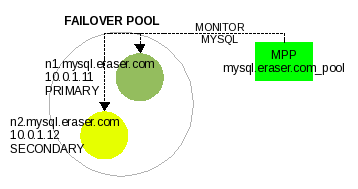
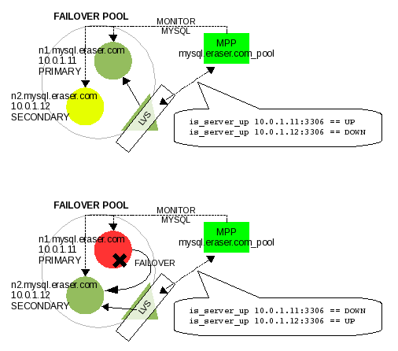
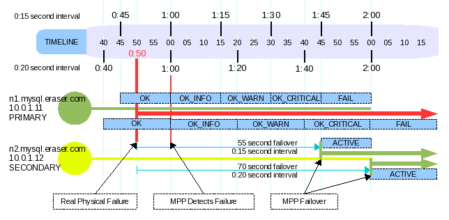
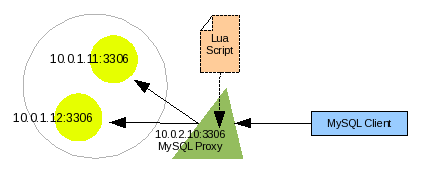
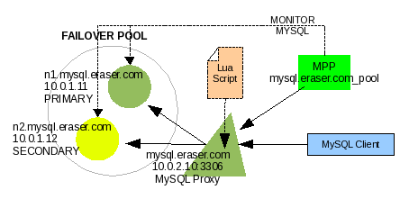

By Russell E Glaue
In part 2 we discussed the internals of MPP and how MPP can be used with LVS to create a failover strategy. In this part 3 we will discuss how to configure and operate MPP, and additionally use MPP with MySQL Proxy to create a failover strategy.
In this Part 3:
This 3-part Article's Index
INSTALLATION
Before we can actually configure MPP we of course have to install it and the MySQL nodes we want to participate in the pool MPP will manage.
Download the latest version of MPP from its project site, http:www.codepin.org/project/mpp, and the version 5 of MySQL from http://www.mysql.com . You should be able to use MySQL from version 4.1.20 and higher with MPP.
By default MPP is configured to run in
/usr/local/mpp, but you can install it anywhere you like. However, if
you do install it in a different location, you will have to make a
manual edit to the main application tool, mysql-pooler.pl so it knows
where to find the MPP libraries. To do this find the line that reads
use lib '/usr/local/mpp/lib'; and change it to use
lib '{MPP_INSTALL_DIR}/lib'; where {MPP_INSTALL_DIR} is where you
installed MPP. For more detailed installation information, see the
INSTALL file distributed with MPP.
The MySQL nodes that will participate together in a pool will need to be configured for master-master replication, also known as circular replication. You can read about how to configure MySQL replication in the article Advanced MySQL Replication Techniques http://dev.mysql.com/tech-resources/articles/advanced-mysql-replication.html.
If you want to set up MySQL replication within 15 seconds without knowing how to actually configure the MySQL nodes, you should follow Giuseppe Maxia blog entry Introducing the 15 seconds rule http://datacharmer.blogspot.com/2007/10/introducing-15-seconds-rule.html.
CONFIGURATION
Let's work with our original fictional eraser company. They want to have a web server access a two MySQL node failover pool. Their web server will be named web.eraser.com and the MySQL server called mysql.eraser.com. The nodes in the MySQL failover pool are named n1.mysql.eraser.com n2.mysql.eraser.com.
To configure MPP to manage the MySQL nodes, we do not need to know about the virtual server, mysql.eraser.com, at this time as that is the responsibility of the load-balancer. This will be covered in a later section.
MPP is configured to run stand-alone, and its evaluations are plugged into a load-balancer. So to configure MPP we need to know the MySQL nodes to be monitored and managed in a failover strategy, and the name of the failover pool we want to use. The name of the failover pool is just for the purposes of referencing the pool on nodes in MPP, and does not directly affect load-balancer.
We will name the pool mysql.eraser.com_pool with the two nodes IP addresses being 10.0.1.11 for n1.mysql.eraser.com as PRIMARY, and 10.0.1.12 for n2.mysql.eraser.com as SECONDARY. We will use the IP addresses in the configuration of MPP rather than using the node names because we do not want MPP's monitoring to be factored on DNS resolution. This configuration is seen in Illustration #1.
|

Illustration 1: Two node MPP failover pool |
To configure this in MPP, we will use the MPP
application tool called mysql-poller.pl . This application tool is
the main tool for all main MPP operations. And to configure this pool
we will have to indicate the location of the cache file, the pool
configuration, and that we want to initialize or set up this pool in
the cache for the first time. Illustration #2 shows the command.
Linux$ cd {MPP_INSTALL_DIR}
Linux$ ./mysql-poller.pl --cache-file=cache/mpp-cache \
--failoverpool="name:mysql.eraser.com_pool;primary:10.0.1.11:3306;secondary:10.0.1.12:3306" \
--cache-init
Illustration 2: Initialize an MPP managed pool
|
The configuration we just created is stored in the cache-file, and we will use that cache-file in every command we use to manipulate the nodes MPP is managing.
We can look at what we just configured using the
mysql-poller.pl, but instead of using --cache-init option, we will
use the --list-cached-pools option, shown in illustration #3.
Linux$ cd {MPP_INSTALL_DIR}
Linux$ ./mysql-poller.pl --cache-file=cache/mpp-cache \
--list-cached-pools
T Server Name req Time of Last Request Status State Last Status Message
- ------------------------------ --- -------------------- ------- -------------- -------------------
* [ mysql.eraser.com_pool ] status=OK
P 10.0.1.11:3306 2007-11-20 14:53:31 OK UNKNOWN
S 10.0.1.12:3306 2007-11-20 14:53:31 OK UNKNOWN
Illustration 3: Listing the cached configuration of an MPP pool
|
Since the option --list-cached-pools operates on
all pools in the cache, we do not have to specify the --failoverpool
option.
UPDATING THE CONFIGURATION
Recalling the MPP mechanics we discussed in part 2,
we notice both nodes are in a STATE of UNKNOWN because MPP has not
began monitoring them to negotiate their STATE within the pool. We
cause the nodes to be monitored and evaluated by MPP using the
mysql-poller.pl application tool with the option --poll-cached-pools,
show in Illustration #4.
Linux$ cd {MPP_INSTALL_DIR}
Linux$ ./mysql-poller.pl --cache-file=cache/mpp-cache \
--username=mysql_mpp_user --password=secret --database=test \
--poll-cached-pools
Illustration 4: Listing the cached configuration of an MPP pool
|
The option --poll-cached-pools operates on all
pools in the cache just like the --list-cached-pools option, so as
before we do not need to specify the --failoverpool option. This time
we do need to specify the username and password MPP will connect to
the MySQL servers as, since the polling process actually logs in to
MySQL and runs SQL commands. And we also need to specify a database
the poller will use in the process of verifying and collecting
metrics on the MySQL server.
We only need to provide the username, password and
database when calling any option that polls the MySQL servers
including --poll-cached-pools, --pool and --poll-pool=poolname.
This option invokes the processes to contact each MySQL node in the MPP pool to collect metrics to evaluate their STATUS, and then apply this with what is known about other pool members to evaluate each nodes' STATE within the pool.
Illustration #5 shows the progression of the nodes in
the pool over several iterations of executing the --poll-cached-pools
option.
After initializing the cache with --cache-init P 10.0.1.11:3306 2007-11-20 14:53:31 OK UNKNOWN S 10.0.1.12:3306 2007-11-20 14:53:31 OK UNKNOWN After the first iteration of --poll-cached-pools P 10.0.1.11:3306 0 2007-11-20 15:07:49 OK STANDBY S 10.0.1.12:3306 0 2007-11-20 15:07:49 OK STANDBY After the second iteration of --poll-cached-pools P 10.0.1.11:3306 1 2007-11-20 15:15:25 OK_WARN ACTIVE PRIMARY instatement to ACTIVE complete. S 10.0.1.12:3306 0 2007-11-20 15:15:25 OK STANDBY After the third iteration of --poll-cached-pools P 10.0.1.11:3306 0 2007-11-20 15:16:03 OK ACTIVE (recovering) PRIMARY instatement to ACTIVE complete. S 10.0.1.12:3306 0 2007-11-20 15:16:03 OK STANDBY After the fourth iteration of --poll-cached-pools P 10.0.1.11:3306 0 2007-11-20 15:16:23 OK ACTIVE S 10.0.1.12:3306 0 2007-11-20 15:16:23 OK STANDBYIllustration 5: Progressing MySQL nodes through their STATE transition in MPP |
Now that the pool is in a stable state, one ACTIVE
and one STANDBY with both in STATUS of OK, we can use the
--list-cached-pools option to view the statuses as we have seen
above, or we can use the --report option to report information on
individual nodes. The --report option can be used my the load
balancer to monitor the STATUS and STATE of each individual node.
Illustration #6 show this usage.
Linux$ cd {MPP_INSTALL_DIR}
Linux$ ./mysql-poller.pl --cache-file=cache/mpp-cache \
--failoverpool="name:mysql.eraser.com_pool" \
--report=10.0.1.11:3306
OK/ACTIVE (PRIMARY)
Linux$ ./mysql-poller.pl --cache-file=cache/mpp-cache \
--failoverpool="name:mysql.eraser.com_pool" \
--report=10.0.1.12:3306
OK/STANDBY (SECONDARY)
Illustration 6: Reporting on a MySQL node
|
We notice that in this command the value we
provided for the --failoverpool option is much shorter. It is not
necessary to provide the entire pool configuration after the
initialization. The mysql-poller.pl will use the pool configuration
stored in the cache. Of course to find the configuration in the
cache, we do still have to provide the pool name.
This command shown in illustration #6 can be used by a load balancer to discover the STATUS and STATE of each node. The STATUS and STATE can be evaluated to determine if the load-balancer should maintain the node as UP or DOWN. As described in part 2 for read-write failover, it might be: if STATE is ACTIVE and STATUS is OK, OK_INFO, or OK_WARN, the node is UP; but if STATE is not ACTIVE, the node is down. Let's put this into a PERL script to use with a load-balancer like LVS. This is in Illustration #7.
#!/usr/bin/perl
my $HOST = shift @ARGV; # format= IP:PORT, i.e. 10.0.1.11:3306
my @command = (
"/usr/local/mpp/mysql-poller.pl",
"--cache-file=/usr/local/mpp/cache/mpp-cache",
"--failoverpool=name:mysql.eraser.com_pool",
"--report=$HOST"
);
my $TEST = `@command`;
if ($TEST =~ /OK\/ACTIVE/) {
print "UP\n";
}
elsif ($TEST =~ /OK_INFO\/ACTIVE/) {
print "UP\n";
}
elsif ($TEST =~ /OK_WARN\/ACTIVE/) {
print "UP\n";
}
else {
print
"DOWN\n"
}
Illustration 7: A PERL script (is_server_up) to evaluate a node as UP or DOWN
|
A load-balancer like LVS can execute this PERL script, is_server_up, to discover if a particular node in the pool should be UP or DOWN. If a failover occurs, MPP will have the SECONDARY, 10.0.1.12:3306, take over as ACTIVE and this script will then evaluate that node as UP and the PRIMARY node as DOWN. LVS ends up negotiating a failover from the PRIMARY to SECONDARY, just by executing this is_server_up PERL script. Illustration #8 shows how this looks like.
|

Illustration 8: LVS uses the is_server_up script to use MPP evaluations to negotiate MySQL failover |
MAKING YOUR CONFIGURATION EASIER
Having the cache configured and using MPP with all
the options we described thus far seems like we are always executing
long command lines. You can configure some defaults in the
mysql-poller.pl application tool so you do not have to provide them
on the command line every time. Four options you may want to
configure in the application could be cache-file, username, password
and database. Near the top of the mysql-poller.pl application tool is
where you can set these defaults as shown in illustration #9.
# Some defaults;
$options{'cache-file'} ||= "/path/to/mpp/cache-file";
$options{'database'} ||= "test";
$options{'username'} ||= "default_mysql_username";
$options{'password'} ||= "default_mysql_password";
Illustration 9: Configuring MPP defaults in mysql-poller.pl
|
With these options configured in mysql-poller.pl,
we no longer have to specify them on the command line when using this
application tool. Our commands we issued above can now be typed in
shorter as shown in illustration #10.
Linux$ ./mysql-poller.pl --cache-init \
--failoverpool="name:mysql.eraser.com_pool;primary:10.0.1.11:3306;secondary:10.0.1.12:3306"
Linux$ ./mysql-poller.pl --list-cached-pools
Linux$ ./mysql-poller.pl --poll-cached-pools
Linux$ ./mysql-poller.pl --failoverpool="name:mysql.eraser.com_pool" \
--report=10.0.1.11:3306
Linux$ ./mysql-poller.pl --failoverpool="name:mysql.eraser.com_pool" \
--report=10.0.1.12:3306
Illustration 10: Shorter mysql-poller.pl commands
|
In the previous section we configured a MPP pool of MySQL nodes, and learned how to set it up to be used under a load balancer like LVS. Once the configuration is ready to be used we have to keep it updated, continuously monitoring the nodes' health, and also be able to recover from a node failover in the pool.
Two methods to set up continuous and repeated
monitoring of the MySQL nodes with state negotiation are to execute
the polling process with mysql-poller.pl in cron on Unix systems, or
to use the mysql-polld.pl daemon script.
First it must be decided how often to poll the mysql nodes. Knowing that, by default, there are four states the nodes will transition through, OK_INFO, OK_WARN, OK_CRITICAL and FAIL, we must consider how fast we want a node to fail, but also how much time do we want to give a node for the possibly of recovering itself. The node is polled, the metrics are evaluated, and the node is promoted or demoted on step. So four cycles are needed to demote a node from OK to FAIL.
DECIDING ON A POLLING INTERVAL
Let's consider that a STANDBY node will take over as ACTIVE when the PRIMARY server reaches the state of FAIL. So from the first detection that the PRIMARY server is in bad health until the SECONDARY server takes over as ACTIVE will be four cycles. The PRIMARY server is evaluated before the SECONDARY servers, so in the same cycle that the PRIMARY is demoted to a STATUS of FAIL and thus a STATE of FAIL the SECONDARY is promoted to a STATE of ACTIVE.
|

Illustration 11: 15 second versus 20 second intervals and real time to failover |
If we want the failover to occur in one minute from detection of the PRIMARY's bad health, our interval must be set to 20 seconds. If we want the failover to occur in one minute from the last known time the PRIMARY was in good health, we must set the interval to 15 seconds. The later would be used to ensure the failover occurs in one minute or less from the PRIMARY node's real failure, and not MPP's first detection of the node's failure as is assumed for the prior. Illustration #11 should help understand this better.
In illustration #11 we see that a 15 second interval will allow for a real time to failover to be under 60 seconds, where as a 20 second interval will allow for a real time to failover to be under 80 seconds.
Let's say that our failover strategy we configured in the first section for mysql.eraser.com has a need for a real failover time to be under 2 minutes. If we use the MPP default number of transitional statuses of 5 (OK, OK_INFO, OK_WARN, OK_CRITICAL and FAIL), then we can figure out what our interval should be with this equation:
[max time in seconds to real failover] / ([total number of transitional statuses] - 1)
120 seconds / 4 = 30 seconds
So by setting our polling interval to 30 seconds, our real time to failover will be between 90 seconds and 120 seconds, but not more than 120 seconds.
RUNNING THE POLLING CYCLES
Now that we have decided on a polling interval of 30
seconds to allow for a maximum real time failover of 120 seconds, we
need to run a polling process to execute this. As mentioned earlier
there are two methods to perform this, using unix cron and using
mysql-polld.pl.
Option #1: unix cron
With cron, you will configure the mysql-poller.pl
script to be executed on a regular interval. Cron is not able to
execute anything at an interval less than 1 minute. To get around
this, we will configured cron in this way for our 30 second interval
we decided to use:
*/1 * * * * sleep 00; /path/to/mysql-poller.pl --poll-cached-pools
*/1 * * * * sleep 30; /path/to/mysql-poller.pl --poll-cached-pools
This example assumes you have configured the required
options (cache-file, username, password, database)
inside mysql-poller.pl (See the subsection "Making your
configuration easier" in the first section).
The only problem will be if the polling cycles overlap in their time, say the previous poll cycle takes 35 seconds to complete. The later only knows the evaluations of the previous by what is written to the cache file. So to use the cron option, you should make sure that the cycles do not take longer than the interval time to execute.
Option #2: mysql-polld.pl
The other option, as of MPP version 1.0.3, is with
mysql-polld.pl , a polling daemon-like script which always runs once
started, and sleeps the necessary time between cycles. The advantage
is that all cycles run in one process (instead of cron) which share a
single open cache, and then writes the results and evaluations to the
cache after successfully collecting metrics in each cycle. If one
cycle gets backed up, the daemon will start delaying the following
ones (possibility eventually skipping a cycle if they get too far
behind).
You specify the interval in seconds between polling with the --interval option.
/path/to/mysql-polld.pl --interval=30 --poll-cached-pools &
As with cron, this example also assumes
you have configured the required options (cache-file, username,
password, database) inside mysql-polld.pl.
Using mysql-polld.pl is preferred over
cron and is safer, and tests show mysql-polld.pl utilizes less
system resources than executing mysql-poller.pl in cron.
RECOVERING A NODE AND RECOVERING FROM A FAILOVER
The last item to know about in order to manage our MPP pool is how to recover a node after it has failed and has been physically recovered. When a node in the MPP pool transitions to the STATE of FAIL, there is no going back automatically, but instead administrative intervention is required. This has been done intentionally as once failed and then recovered, the administrator may require additional steps to be performed before allowing MPP to recover the node and make it available again.
Let's take a look at a possible scenario which could make a MySQL node become unavailable and FAIL. This could be that MySQL has reached the maximum allowed connections and is denying new connections. Illustration #12 shows how MPP reflects this.
Linux$ cd {MPP_INSTALL_DIR}
Linux$ ./mysql-poller.pl --cache-file=cache/mpp-cache \
--list-cached-pools
T Server Name req Time of Last Request Status State Last Status Message
- ------------------------------ --- -------------------- ------- -------------- -------------------
* [ mysql.eraser.com_pool ] status=OK
P 10.0.1.11:3306 0 2007-11-20 15:33:04 OK ACTIVE
S 10.0.1.12:3306 45 2007-11-20 15:33:04 FAIL FAILED_OFFLINE Could not connect to mysql host 10.0.1.12:3306: Too many connections
Illustration 12: MySQL node failure due to "ERROR 1040 (00000): Too many connections"
|
Once the administrator physically addresses and fixes this issue, Illustration #13 shows how MPP reflects the status of the nodes.
Linux$ cd {MPP_INSTALL_DIR}
Linux$ ./mysql-poller.pl --cache-file=cache/mpp-cache \
--list-cached-pools
T Server Name req Time of Last Request Status State Last Status Message
- ------------------------------ --- -------------------- ------- -------------- -------------------
* [ mysql.eraser.com_pool ] status=OK
P 10.0.1.11:3306 0 2007-11-20 15:35:06 OK ACTIVE
S 10.0.1.12:3306 0 2007-11-20 15:35:06 OK FAILED_OFFLINE (recovering) FAILED server is reporting recovery. Manual intervention required.
Illustration 13: MySQL node failure due to "ERROR 1040 (00000): Too many connections"
|
Manual intervention is required to recover this
node, and this is performed with the --recover option of
mysql-poller.pl. This resets the SECONDARY node back to the state of
UNKNOWN, which allows it to be eventually promoted back to STANDBY.
This action and MPP output is shown in Illustration #14.
Linux$ cd {MPP_INSTALL_DIR}
Linux$ ./mysql-poller.pl --cache-file=cache/mpp-cache \
--failoverpool=name:mysql.eraser.com_pool --recover=10.0.1.12:3306
OK: Cached level reset from OK/0 (FAILED_OFFLINE) to OK_WARN/0 (UNKNOWN) for 10.0.1.12:3306
Linux$ ./mysql-poller.pl --cache-file=cache/mpp-cache \
--list-cached-pools
T Server Name req Time of Last Request Status State Last Status Message
- ------------------------------ --- -------------------- ------- -------------- -------------------
* [ mysql.eraser.com_pool ] status=OK
P 10.0.1.11:3306 0 2007-11-20 15:37:08 OK ACTIVE
S 10.0.1.12:3306 0 2007-11-20 15:37:08 OK_WARN UNKNOWN Manual Recovery Initiated.
(..wait for a few cycles to complete...)
Linux$ ./mysql-poller.pl --cache-file=cache/mpp-cache \
--list-cached-pools
T Server Name req Time of Last Request Status State Last Status Message
- ------------------------------ --- -------------------- ------- -------------- -------------------
* [ mysql.eraser.com_pool ] status=OK
P 10.0.1.11:3306 0 2007-11-20 15:40:12 OK ACTIVE
S 10.0.1.12:3306 0 2007-11-20 15:40:12 OK STANDBY
Illustration 14: Recovering a node that has failed
|
This never affected downtime because the problem was with the SECONDARY STANDBY node and not the PRIMARY ACTIVE node. If this error happened to the PRIMARY ACTIVE node instead, the SECONDARY STANDBY node would be promoted to ACTIVE once the PRIMARY node was demoted to FAIL. To recover we follow the same steps. Once MPP promotes the PRIMARY node to STANDBY, the SECONDARY ACTIVE node will step down to STANDBY. Then on the next polling cycle the PRIMARY node will be promoted from STANDBY to ACTIVE. Illustration #15 shows how this occurs.
* [ mysql.eraser.com_pool ] status=OK
P 10.0.1.11:3306 4 2007-11-20 15:33:04 FAIL FAILED_OFFLINE Could not connect to mysql host 10.0.1.11:3306: Too many connections
S 10.0.1.12:3306 1 2007-11-20 15:33:04 OK_WARN ACTIVE FAILOVER: Taking over ACTIVE state.
(..physically fix PRIMARY server...)
* [ mysql.eraser.com_pool ] status=OK
P 10.0.1.11:3306 0 2007-11-20 15:36:06 OK_WARN FAILED_OFFLINE FAILED PRIMARY server is reporting recovery. Manual intervention required.
S 10.0.1.12:3306 0 2007-11-20 15:36:06 OK ACTIVE
Linux$./mysql-poller.pl --cache-file=cache/mpp-cache \
--failoverpool=name:mysql.eraser.com_pool --recover=10.0.1.11:3306
OK: Cached level reset from OK/0 (FAILED_OFFLINE) to OK_WARN/0 (UNKNOWN) for 10.0.1.11:3306
* [ mysql.eraser.com_pool ] status=OK
P 10.0.1.11:3306 0 2007-11-20 15:37:08 OK_WARN UNKNOWN Manual Recovery Initiated.
S 10.0.1.12:3306 0 2007-11-20 15:37:08 OK ACTIVE
* [ mysql.eraser.com_pool ] status=OK
P 10.0.1.11:3306 0 2007-11-20 15:38:08 OK STANDBY Manual Recovery Initiated.
S 10.0.1.12:3306 1 2007-11-20 15:38:08 OK_WARN ACTIVE Ready to relinquish ACTIVE state to PRIMARY.
* [ mysql.eraser.com_pool ] status=OK
P 10.0.1.11:3306 0 2007-11-20 15:39:08 OK_WARN STANDBY Waiting for SECONDARY to stand down before instatement to ACTIVE.
S 10.0.1.12:3306 1 2007-11-20 15:39:08 OK_WARN STANDBY (recovering) Relinquishing ACTIVE state to PRIMARY.
* [ mysql.eraser.com_pool ] status=OK
P 10.0.1.11:3306 1 2007-11-20 15:40:08 OK_WARN ACTIVE PRIMARY instatement to ACTIVE complete.
S 10.0.1.12:3306 0 2007-11-20 15:40:08 OK STANDBY
* [ mysql.eraser.com_pool ] status=OK
P 10.0.1.11:3306 0 2007-11-20 15:42:12 OK ACTIVE
S 10.0.1.12:3306 0 2007-11-20 15:42:12 OK STANDBY
Illustration 15: Recovering the failed PRIMARY node back to ACTIVE
|
This is the basic method for handling failover
recovery. There is another option to make recovery faster to promote
the PRIMARY to ACTIVE manually (using the mysql-poller.pl
--activate-primary option). You can consult the mysql-poller.pl
application tool help context for further information.
MySQL Proxy is a stand-alone application the works as a higher level controller for a pool of MySQL nodes. Linux Virtual Server directs requests at the TCP level to work as a load-balancer for the nodes in the LVS pool, MySQL Proxy intercepts and resends mysql communication on the packet level. If you are familiar with a HTTP reverse proxy, you will find the basic concept is similar.
Because MySQL Proxy handles traffic on the packet level instead of the TCP level as LVS does, it has a disadvantage and an advantage. MySQL Proxy is resending packets it receives from the client on to the server, the server sees the connection coming from the MySQL Proxy host and not the client host. As a result, MySQL server will base all host authentication on the peer address of the MySQL server host, which is the MySQL Proxy host and not the client host. This is a disadvantage if we have been basing MySQL user access control on a host allowance basis.
Linux Virtual Server does not introduce this issue as it redirects traffic on the TCP level (unless configured for a NAT), and is invisible to the MySQL server nodes it redirects traffic to. Thus the MySQL server will see the peer address as the MySQL client host.
The advantage MySQL Proxy has is that it can load-balance traffic, perform filtering, even firewalling as well as other operations based on evaluations of the packet the MySQL client is sending. MySQL Proxy in this way can act similar to a Layer 7 router, firewall, or even intrusion detection *.
* Layer 7 is the application level of the OSI model. See Wikipedia's "The 7 Layers of the OSI Model" The use of layer 7 load-balancing, routing, firewalling and intrusion detection is usually found in high level expensive vendor hardware. MySQL Proxy can perform similar layer 7 functionality for MySQL using Lua scripts the administrator can customize and run with MySQL Proxy.
This advantage of MySQL Proxy enables us to filter requests, or restrict subsets of data that can be returned to the client, even filter out social security numbers or other patterns from SQL result data if you are storing highly sensitive data. Aside from controlling access and data, MySQL Proxy can perform more than what you can get from Layer 7 hardware, like timing SQL queries, and helping you perform debugging, or even parallel querying MySQL servers **.
** Parallel querying MySQL servers has been discussed in the MySQL Proxy Forums. Although the independent threading necessary to execute this is not yet available in Proxy, parallelism might theoretically be achievable using a pipelining method with the use of Lua coroutines, and the Lua MySQL client to make additional connections on the Lua level outside the proxy core.
Performing layer 7 packet filtering and executing functionality based on it is performed in a programmed script written in the Lua programming language. MySQL Proxy is shipped with basic load balancing functionality, but this can be expanded on or even replaced by a Lua script an administrator can write and run with MySQL Proxy.
Illustration #16 shows a higher level view of how we will configure and use MySQL Proxy. We see the same two MySQL server nodes as before. However instead of Linux Virtual Server as the controller, we now see MySQL Proxy as the controller. Also a Lua Script is now loaded which MySQL Proxy will execute for evaluation of every request from client to server and every result from server back to client. The MySQL client connects to MySQL Proxy, which in turn connects to the MySQL server forwarding the client's connection and authorization request.
|

Illustration 16: A visual look of how to setup and use MySQL Proxy. |
After downloading MySQL Proxy to
our computer, installing it anywhere we like, we can run the
configuration shown in illustration #16 in MySQL Proxy using the
options --proxy-backend-addresses=<host:port>,
--proxy-address=<host:port> and --proxy-address=<host:port>.
Additionally, if we want to run this configuration as a daemon
process we will use the options --daemon and --pid-file=<file>.
Illustration #17 show a start and stop script that can be used for
this configuration.
#!/bin/sh
PROXY_DIR=<...path_to_MySQL_Proxy_install_dir...>
PROXY_PID_FILE=$PROXY_DIR/mysql-proxy.pid
case "$1" in
start)
$PROXY_DIR/sbin/mysql-proxy \
--proxy-backend-addresses=10.0.1.11:3306 \
--proxy-backend-addresses=10.0.1.12:3306 \
--proxy-address=10.0.2.10:3306 \
--proxy-lua-script=$PROXY_DIR/share/tutorial-basic.lua \
--pid-file=$PROXY_PID_FILE \
--daemon
;;
stop)
kill `cat $PROXY_PID_FILE`
;;
*)
echo "Usage: $0 start|stop"
esac
Illustration 17: A start/stop script for MySQL Proxy
|
Start the backend MySQL server nodes, then start up MySQL Proxy. Once MySQL Proxy is running, you can connect to it just as though you were connecting to a real MySQL server, using a mysql client. For our configuration you would connect with:
mysql -u <username> -p<password> -h 10.0.2.10 -P 3306
Using the Lua script "share/tutorial-basic.lua", which is bundled with the MySQL Proxy distribution, we should see from the MySQL Proxy console output "we got a normal query: ...query..." every time we connect and execute an SQL query. MySQL Proxy receives our SQL query, prints this statement, then redirects our request to a backend MySQL server of its choosing. The MySQL server node receives the request from MySQL Proxy, processes it, then sends the result back to MySQL Proxy. MySQL Proxy receives the result from the MySQL server node, then sends it on to our MySQL client which displays the results to us.
For further discovery and exploration of the possibilities with MySQL Proxy, you should start by visiting the MySQL Proxy project page http://forge.mysql.com/wiki/MySQL_Proxy
Here are some resources to point you in the direction for diving into MySQL Proxy:
As we added MPP into Linux Virtual Server in Part 2, we will now add MPP into MySQL Proxy, building on our example in the previous section. Illustration #18 shows what this looks like.
|

Illustration 18: MySQL Proxy + MPP configuration |
We discussed in the first section on Configuring MPP how to setup this configuration in MPP. We discussed in the second section how to maintain this configuration in MPP. And we discussed in the third section how to set up MySQL Proxy for this configuration. Now let's find out how to configure MPP to tell MySQL Proxy how to negotiate a MySQL failover.
The way that MPP relates to
MySQL Proxy is by pushing evaluations into Proxy. In order for this
to happen, MySQL Proxy must be started with a Lua script written for
MPP communication. The Lua script is bundled with MPP and is found as
share/mysql-proxy/mpp.lua in the MPP install directory. To use it we
need to modify the --proxy-lua-script option in the MySQL Proxy
start/stop script we created in illustration #17.
--proxy-lua-script=<MPP_Install_Dir>/share/mysql-proxy/mpp.lua
There are two application tools to use to maintain
the relationship between MySQL Proxy and MPP for a Proxy+MPP
configuration. The first one is the mysql-polld.pl application you
are already aware of from the second section on managing MPP. This
application tool will also manage MPP evaluations in MySQL Proxy. The
second application tool is mpp-proxyadmin.pl which is an
administrative command line tool for setting and managing MPP
evaluations inside MySQL Proxy. The mysql-polld.pl application tool
will push evaluations into MySQL Proxy on each cycle. The
mpp-proxyadmin.pl will also push MPP evaluations into Proxy upon
execution, but will also allow the administrator to inject their own
decisions in place of MPP evaluations.
Referring back to the configuration we used to
execute mysql-polld.pl, we will now add the additional parameters to
make it push MPP evaluations into MySQL Proxy. We'll take this one
step further to create a start/stop script for mysql-polld.pl, shown
in Illustration #19.
#!/bin/sh
MPP_DIR=<...path_to_MPP_install_dir...>
MPP_CACHE_FILE=$MPP_DIR/cache/mpp-cache
MPP_PID_FILE=$MPP_CACHE_FILE-polld.pid
case "$1" in
start)
$MPP_DIR/mysql-polld.pl \
--cache-file=$MPP_CACHE_FILE \
--interval=30 \
--poll-cached-pools \
--username=mysql_user \
--password=mysql_pass \
--database=mysql_database \
--proxyhost=10.0.2.10 \
--proxyport=3306 \
--proxyuser=mysql_user \
--proxypass=mysql_pass \
&
;;
stop)
kill `cat $MPP_PID_FILE`
;;
*)
echo "Usage: $0 start|stop"
esac
Illustration 19: A start/stop script for mysql-polld.pl
|
As discussed at the end of the first section, we
could make our execution line shorter by configuring all the required
options inside mysql-polld.pl. The --proxyhost and --proxyport
options are required to have mysql-polld.pl push evaluations into
MySQL Proxy. Also, the options --proxyuser and --proxypass do not
have to be specified if they are the same as --username and
--password.
The execution of mysql-polld.pl in illustration #19
will poll the MySQL server nodes cached in each pool on a reoccurring
cycle of the defined interval. At the end of each cycle, when metrics
are collected and stored to the MPP cache, a process will be executed
to push the cycle's evaluations into MySQL Proxy.
The second application tool is mpp-proxyadmin.pl and
is used to administer the MPP evaluations inside MySQL Proxy. It is
called with the --cache-file=<cache_file> option to use a cache
file, and the --pool=<pool_name> to work with a pool in that
cache. When the option --initialize-all and --set-all are used, the
configuration and evaluations from the cache are pushed into MySQL
Proxy. When the option --set=<node> is used, we can set our own
value of a node's TYPE, STATE, or STATUS when we supply any or all of
the options --type=<type>, --state=<state>, or
--status=<status>.
If MPP is evaluating a host as FAIL because it lost
replication from its master, but we want it to serve as ACTIVE master
anyway, we can use the mpp-proxyadmin.pl application tool to do this.
First we must stop the mysql-polld.pl application tool so that it
does not update Proxy with its evaluations, then we can use
mpp-proxyadmin.pl to set the failed nodes STATE and STATUS. This is
shown in illustration #20.
Linux$ cd <MPP Install Directory>
Linux$ ./mysql-polld-startstop.sh stop # start/stop script from Illustration #19
Linux$ ./mpp-proxyadmin.pl --cache-file=<cache_file> \
--proxyhost=10.0.2.10 --proxyport=3306 \
--proxyuser=<MySQL_username> --proxypass=<MySQL_password> \
--set=10.0.1.11:3306 \
--state=ACTIVE \
--status=OK
Setting node 10.0.1.11:3306...
set node 10.0.1.11:3306 status: SUCCESS
set node 10.0.1.11:3306 state: SUCCESS
Linux$ ./mpp-proxyadmin.pl --cache-file=<cache_file> \
--proxyhost=10.0.2.10 --proxyport=3306 \
--proxyuser=<MySQL_username> --proxypass=<MySQL_password> \
--show-nodes
| nodename | group | element | value |
| 10.0.1.11:3306 | proxy | type | BACKEND_TYPE_RW |
| 10.0.1.11:3306 | proxy | state | BACKEND_STATE_UP |
| 10.0.1.11:3306 | proxy | address | 10.0.1.11:3306 |
| 10.0.1.11:3306 | proxy | connected_clients | 1 |
| 10.0.1.11:3306 | mpp | type | PRIMARY |
| 10.0.1.11:3306 | mpp | state | ACTIVE |
| 10.0.1.11:3306 | mpp | status | OK |
| 10.0.1.11:3306 | mpp | weight | 1 |
| 10.0.1.12:3306 | proxy | type | BACKEND_TYPE_RW |
| 10.0.1.12:3306 | proxy | state | BACKEND_STATE_UP |
| 10.0.1.12:3306 | proxy | address | 10.0.1.12:3306 |
| 10.0.1.12:3306 | proxy | connected_clients | 0 |
| 10.0.1.12:3306 | mpp | type | SECONDARY |
| 10.0.1.12:3306 | mpp | state | STANDBY |
| 10.0.1.12:3306 | mpp | status | OK |
| 10.0.1.12:3306 | mpp | weight | 1 |
Illustration 20: Using mpp-proxyadmin.pl application tool
|
As discussed at the end of the first section, we
could make our execution line shorter by configuring all the required
options inside mpp-proxyadmin.pl. The --proxyhost and
--proxyport options are required as this application tool connects
to MySQL Proxy to perform all tasks.
Illustration #19 shows an additional command and
resulting output, --show-nodes, which allows us to see what data
evaluations MySQL Proxy is currently storing. The group "proxy"
are the values for node elements managed internally by MySQL Proxy
itself. MySQL Proxy uses these values in its own determination of how
to perform load-balancing. MPP only shows this, and does not set or
use any of these elements. The group "mpp" are the values for
node elements managed externally by MPP.
The mpp.lua script used by MySQL Proxy provides an SQL-like command syntax to allow the external MPP application tools to connect to proxy and update the "mpp" group's elements maintained in an internal Lua table. Additional Lua code uses these values to select which MySQL server node a connecting MySQL client will get. This Lua code which selects nodes and enacts the actual MySQL failover inside MySQL Proxy ignores the "proxy" group elements thus overriding MySQL Proxy's load-balancing mechanisms.
This SQL-like syntax the mpp.lua script
provides is used by both mysql-polld.pl and mpp-proxyadmin.pl
application tools to manipulate the MPP evaluations MySQL Proxy
stores in an internal Lua table. This internal Lua table can be
thought of as a secondary MPP cache, only it just stores the
resulting MPP evaluations for each node.
SUMMARY
We downloaded MySQL Proxy and installed it at our preferred location. We can install the binary version (latest is 0.6.0 as of writing), or we can compile and install the latest version from MySQL Proxy's Subversion Repository. MPP (latest is 1.0.3 as of writing) was installed. Also, we downloaded MySQL Server 5, although we could have used MySQL 4.1.20+ with MPP. MySQL Server 5 was installed on two different servers, and MySQL Proxy+MPP was installed on a third server.
Optionally, we could have installed both MySQL server nodes locally using Giuseppe Maxia's 15 second rule describe in section one. MySQL Proxy and MPP could also be installed locally.
We configured MPP with our two
nodes using mysql-poller.pl. The mysql-polld.pl application tool is
polling the nodes regularly at the defined interval we specified, and
then stores node metrics, processes them to decipher the node's
status in the pool, negotiates a failover when necessary, and
continually pushes these evaluations to an internal Lua table inside
MySQL Proxy.
The mpp.lua Lua script distributed with MPP and
loaded into MySQL Proxy on startup provides the SQL-like command
syntax to allow mysql-polld.pl to connect and update the internal Lua
table holding the MPP evaluations. Additional Lua code in the mpp.lua
script works conceptually similar to the "is_server_up" health
check script we created for LVS to only give out ACTIVE MySQL server
node connections to MySQL clients.
If a failover occurs, we repair the MySQL server
node, and recover the node in the MPP configuration using the
mysql-poller.pl application tool. Then mysql-polld.pl pushes this
recovery into MySQL Proxy. Should we want to override what MPP
evaluates without changing it, we stop the mysql-polld.pl application
tool, and use mpp-proxyadmin.pl application tool to set our desired
evaluations in the internal Lua table of MySQL Proxy. The main MPP
logic is out of the picture, and we are maintaining MySQL Proxy node
status and failover manually using mpp-proxyadmin.pl. If we are ready
to return control to MPP logic instead of our manual control, we
start mysql-polld.pl back up and it takes over again.
MySQL Proxy is still young at version 0.6.0, and so is MPP at version 1.0.3. MySQL Proxy can do some great and powerful things, and its potential is yet to be experienced. MPP was written long before MySQL Proxy came on the scene to fill a gap I felt was missing in the MySQL community. Load-balancers are a great thing, but MySQL is so complex. To ensure everything is okay, we cannot just perform simple TCP or SQL tests to satisfy health requirements. Once health is properly collected from the MySQL nodes, what can the load-balancer do with it? Without a history of what the nodes have been experiencing and knowledge on the nodes' relationships it is difficult to perform intelligent management.
I spent years monitoring MySQL manually, using nagios to help me. Then I performed manual failovers when necessary. This was never satisfying. I wanted to load-balance MySQL nodes, I wanted replication relationships to be evaluated, and I wanted some automation to failover so I could have some rest, and only worry about a pool of MySQL nodes after the failover.
So several years ago I began writing MPP to fill this niche. I did not know where the MySQL community was going, so I wrote MPP to be modular and flexible. This is why I wrote it in PERL, and is also the basis for writing it to be a second party application for load balancers.
Now that MySQL Proxy is out, the potential for the MySQL community has jumped leaps and bounds. I am renewed in my drive forward to help the community fill a niche I have yet seen to be satisfied.
May MPP be a step forward in the right direction for the community.
It is with great hope that MPP can be useful.
THANK YOU
Great thanks to Giuseppe Maxia for his encouragement.
http://codepin.cait.org/project/mpp